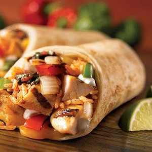
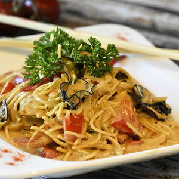

Sol De Mexico
This casual sit-down Mexican spot in Craigin-Belmont looks kind of like an art gallery, with sculptures, paintings, and masks hanging all over. You’ll find white tablecloths on all the tables and tissue paper accents on the plates, but the overall atmosphere is low-key, and it works for a casual weeknight dinner or laidback date.
The menu changes regularly (four times a year, to be exact), and includes dishes you probably don’t see all the time. Like papadzules - tasty corn tortillas filled with hard-boiled eggs, covered in pumpkin seed mole and a chili-habanero sauce. Or a perfectly cooked rabbit with a smoky guajillo salsa. That said, there are also staples you can always count on, like slightly sweet corn tamales in a spicy chicaca cream sauce (a must-order), and a tender rack of lamb in a delicious black mole. Speaking of mole, all the sauces here are fantastic, and, like Def Leppard’s Pour Some Sugar On Me, improve just about everything.
While the sauces are reliably delicious, not everything is a hit. For example, you’ll frequently come across a very dry piece meat or fish. Like bland diced chicken breast in the enchiladas, or overcooked carne asada and salmon that both really need the moisture from their sauces. We’ve also had the unnerving experience of finding chicken bones in the shredded-chicken-filled masa boats. But as long as you focus on what this place does really well (i.e. moles and anything with lamb or rabbit), you’ll have a good meal.

Chicago Cut
Chicago Cut is the steakhouse you visit for a Power Meal. A Power Meal could mean a few things, including a corporate dinner, special occasion, or even a big Saturday night out because you haven’t had one in a while. And Chicago Cut is the king of Power Meals, because in a city full of fancy and expensive steakhouses, this is the most formal and expensive of the bunch. If you come expecting this, and are ready to spend on a serious meal, you’ll have a great time.
Chicago Cut is particularly suited to Power Meals when you take into account where it’s located, right on the river at the base of an office building home to a top-level consulting company, a prestigious law firm where people get paid more than you, and Governor Rauner’s private equity firm. These businesses make Chicago Cut a go-to spot for corporate cards, but know that it also gets a steady stream of locals and regular people looking for a steakhouse Power Meal in River North.

Immm Rice& Beyond
You’ve probably been to a few restaurants where you wanted to order pretty much everything on the menu. But unless you were really hungry, rich, or both, that likely wasn’t a feasible option. At Immm Rice & Beyond, it basically is - which is one reason we like this place so much.
This is a casual BYOB spot in Uptown that specializes in Thai street food, and the menu is so extensive that it takes up a huge chalkboard wall. That’s probably the first thing you’ll notice when you walk in - and the second thing you’ll notice is the steam table full of stews and curries, which smell like they’ve been developing flavor all day long (because, well, they have).
You’re going to want to try as many of those as possible, and the good news is that you can (especially if you bring a few friends with you). Just go for the “Thai Dinner Table” option, which allows you to order lots of different dishes in small, tasting-size portions for $6 each. Like the fantastic pangang mhoo (thinly sliced pork in a rich and spicy curry), the moo whan (caramelized pork belly in a fish sauce that’s the perfect combination of sweet, salty, and fatty), and the fried hard-boiled eggs that we wish we could have for lunch every day. Beyond the Thai Dinner Table options, be sure to get a few full-sized things, like the pad prik khing in a spicy lime curry, and the khao mung gai (poached chicken, broth, rice, and a ginger chili sauce) that’s one of the best things on the menu. Just skip the pad thai, the overly sweet pad see eiw, and the thin green curry with chicken - you have a whole chalkboard full of better options here.